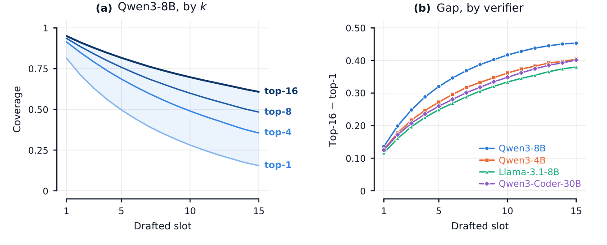
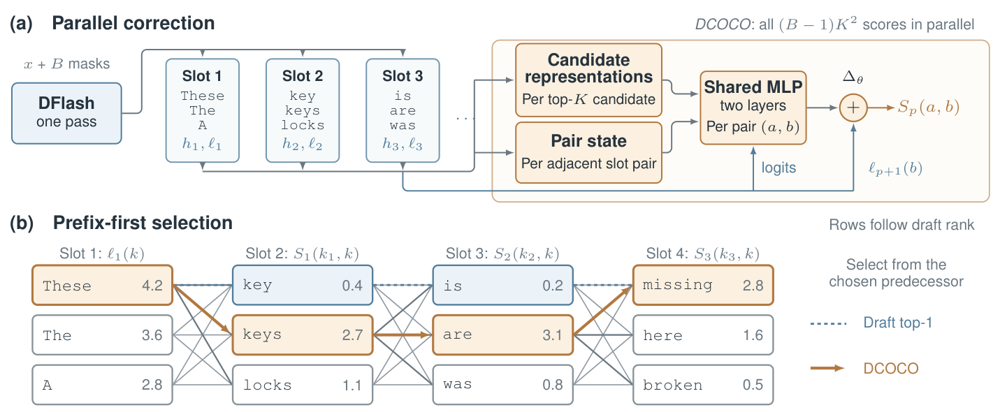
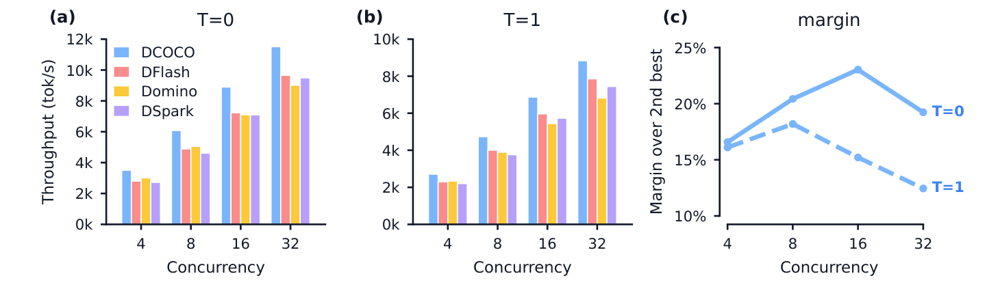

The full paper is on arXiv: arxiv.org/abs/2610.12570.
Code, a ready-to-serve vLLM image and the evaluation suite: github.com/two-delta/DCOCO. Drafters for Qwen3-4B and Qwen3-8B: huggingface.co/TD-Labs.
The bottom line
Across four verifier backbones and ten benchmarks, DCOCO achieves the highest average throughput in every evaluated configuration: greedy and stochastic decoding, with and without extended reasoning. It reaches speedups of up to 6.6× over vanilla decoding, and its best average speedup is 8–19% above the strongest competing method in each configuration.
Its advantage persists under concurrent serving. DCOCO outperforms the strongest competing method by 6–23% across 4–32 concurrent requests, while the sequential correctors fall below uncorrected DFlash at these loads.
| Verifier | Thinking | DFlash | Domino | DSpark | DCOCO |
|---|---|---|---|---|---|
| Qwen3-4B | off | 2.98× / 2.52× | 3.27× / 2.71× | 2.66× / 2.28× | 3.62× / 2.95× |
| Qwen3-4B | on | 2.08× / 1.87× | 2.17× / 1.93× | 1.85× / 1.69× | 2.38× / 2.12× |
| Qwen3-8B | off | 2.95× / 2.45× | 3.16× / 2.53× | 2.88× / 2.37× | 3.62× / 2.87× |
| Qwen3-8B | on | 1.95× / 1.78× | 1.97× / 1.79× | 1.83× / 1.68× | 2.26× / 2.03× |
| Qwen3-Coder-30B-A3B | off | 1.89× / 1.67× | 1.94× / 1.67× | 1.84× / 1.62× | 2.31× / 1.98× |
| Llama-3.1-8B | off | 3.03× / 1.75× | 3.24× / 1.79× | 3.01× / 1.65× | 3.75× / 1.93× |
DCOCO costs a few percent of the drafting cycle, ships as drafters for Qwen3-4B and Qwen3-8B, and runs in vLLM: vllm serve is all it takes.
How was this made possible?
Speculative decoding accelerates inference by having a lightweight drafter propose several future tokens, which the target model then verifies together. Verification preserves the target model's output distribution, so the benefit of a drafter is entirely in the speedup it delivers, and that depends on two things: how many drafted tokens are accepted, and how long drafting takes.
Parallel diffusion drafters such as DFlash cut drafting latency by proposing a whole block in a single forward pass. That parallelism has a price. Tokens within a draft block are predicted without access to the realized identities of the tokens before them, so individually plausible predictions can combine into an incoherent continuation. A drafter that assigns probability to both “New York” and “San Diego” may emit “New Diego”.
Two recent methods, DSpark and Domino, recover these dependencies by adding a small sequential module that runs position by position. They recover acceptance, but the recurrence sits on the critical path of every drafting cycle. Our question was whether intra-block dependencies can be restored without reintroducing a sequential module. Two observations say they can.
The drafter has usually already suspected the right token
We recorded DFlash's candidates during speculative decoding and measured top-k coverage: how often a slot's k highest-scoring candidates contain the token the verifier eventually commits. On Qwen3-8B, the top-16 candidates contain the verifier's token at 59% of the slots where the top-1 is wrong. The gap widens deeper into the block: at the last slot, top-16 coverage stays above 0.60 while top-1 falls below 0.16.

The drafter does not lack the right tokens; it fails to select them. Correction can therefore be cast as re-selection among the drafter's existing candidates, not generation of new tokens. And re-selection over K candidates per slot reduces to scoring K² transitions between adjacent slots, all of which can be computed at once.
Verification only rewards the prefix
The verifier judges the draft left to right and stops at the first rejection. A corrected token at slot 5 standing behind a rejection at slot 1 is never even examined. An improvement deep in the block is only worth something if everything before it is accepted, so correction should prioritize the early prefix rather than optimize a score over the whole block.
DCOCO: re-select, don't regenerate
DCOCO operates on a single DFlash pass. Rather than committing to the top prediction at each slot, it keeps the top-K candidates, scores how well each candidate fits each candidate in the next slot, and then picks the draft with a prefix-first walk. It plays below; click a step to jump to it.
Scoring every transition in parallel. For each pair of adjacent slots, DCOCO assigns every transition from candidate a at slot p to candidate b at slot p+1 a score: the successor's own draft logit plus a learned correction.
Here z is a candidate representation that fuses the candidate's token embedding with its slot's hidden state, sp is a pair state computed once from the two slots' hidden states and reused across all K² transitions, and Δθ is a shared two-layer MLP. The corrector reads only what the single DFlash pass already produced (hidden states, candidate ids and logits), and all (B−1)K² scores are computed in one batched operation. Its output layer is zero-initialized, so before training every score reduces to the drafter's own logit and DCOCO reproduces the original draft exactly.
Prefix-first selection. Maximizing the sum of transition scores over the whole block would let a strong late transition compensate for a weak early one, even though late tokens only count if the prefix survives. DCOCO instead keeps the drafter's top candidate at the first slot and walks left to right, taking the highest-scoring successor of the token it just chose:
This mirrors the way verification consumes a draft: front to back, stopping at the first miss. The walk costs O(BK) on top of the O(BK²) batched scoring pass. Only this lightweight selection is sequential; neural scoring stays parallel. Unlike DSpark and Domino, no learned module runs position by position.

Training. The drafter and corrector are trained jointly, starting from a six-epoch DFlash checkpoint and training six more epochs with the corrector. Labels are the verifier's own argmax tokens at adjacent slots, and the correction loss is exponentially down-weighted with slot depth, matching the prefix structure of verification.
Where the speed comes from
Throughput is the number of tokens committed per verification cycle divided by the time a cycle takes, so a method can gain on either axis. DCOCO gains on both. Against the strongest baseline on Qwen3-8B, it accepts 7–8% longer prefixes and runs 6% shorter cycles, which multiply to a 13–15% throughput gain. Relative to the uncorrected drafter, it pays 3–4% per cycle for 18–27% longer accepted prefixes.
It holds up under load
Serving systems batch concurrent requests, so we measured aggregate throughput from 4 to 32 concurrent streams. DCOCO is fastest at every concurrency, with margins over the strongest alternative reaching 23% under greedy decoding and 18% under sampling, and still 19% and 12% at 32 streams. Domino and DSpark keep their accepted lengths but progressively lose their throughput advantage, and both become slower than uncorrected DFlash at the highest concurrency as their per-position overhead outweighs the benefit. DCOCO stays ahead of DFlash throughout.

What matters inside the corrector
- Prefix-first beats global. Over identical learned scores, maximizing the block's total score yields lower accepted length and throughput than the greedy walk on every suite. A geometrically discounted global rule matches greedy's acceptance but is 2.8% slower on average, with an extra hyperparameter.
- Both input pathways count. Removing the pair state costs 7.3% / 5.6% of accepted length (T=0 / T=1); removing the candidate representations costs 4.8% / 3.7%.
- It works as a drop-in, and better trained jointly. With the drafter frozen, the corrector alone still improves DFlash by 4.4%; joint training is worth roughly 15% more.
Absolute speedups follow the drafter's base acceptance. With thinking off, math and code reach 3.7–6.1× while open-ended chat stays at 1.8–1.9×.
Try it
DCOCO runs in vLLM through the speculative-decoding dflash method; the corrector is selected from the checkpoint's architecture. Build the image, which adds DCOCO to the official vllm/vllm-openai:v0.31.0 release:
git clone https://github.com/two-delta/DCOCO.git && cd DCOCO
docker build -t dcoco:vllm-v0.31.0 docker/Serve a drafter with its target model; vLLM downloads both from Hugging Face:
docker run --gpus '"device=0"' --ipc=host -p 8000:8000 \
-v ~/.cache/huggingface:/root/.cache/huggingface -e HF_TOKEN \
dcoco:vllm-v0.31.0 Qwen/Qwen3-8B \
--speculative-config '{"method": "dflash", "model": "TD-Labs/Qwen3-8B-DCOCO", "num_speculative_tokens": 15}'Then query it like any OpenAI-compatible server. Released drafters: TD-Labs/Qwen3-8B-DCOCO and TD-Labs/Qwen3-4B-DCOCO, both with block size 15. To reproduce the paper's ten-suite evaluation against a running server, use scripts/benchmark.py in the repository.
Limitations
- Each drafter is trained for one target model and must be served with exactly that model, with its full vocabulary.
- The released drafters were trained on thinking-off generations; the speedup is lower with extended thinking.
- The speedup depends on the task: highest on math and code, lower on open-ended chat.
The takeaway
Parallel block drafters leave two things on the table: their top-K lists hold the right token far more often than their top-1 choice, and the identity of each drafted token is information no other slot ever gets to use. DCOCO is built on exactly these two facts. It reads only what the drafter already produced, scores every transition between adjacent candidates in parallel, and then greedily takes the best transition at each step, the way verification consumes a draft. Correction, made cheap enough, is pure profit for speculative decoding.
Acknowledgements
DCOCO builds on DFlash, and we compare against Domino and DSpark. Our evaluation prompts come from DeepSpec and NVIDIA's SPEED-Bench, and serving is built on vLLM. We thank their authors and maintainers.
Citation
You can cite this post or the paper with the following:
@misc{eisenstadt2026contextualcorrectionparalleldrafts,
title = {Contextual Correction of Parallel Drafts for Speculative Decoding},
author = {Roy Eisenstadt and Harel Lidar and Tal Gonen and Omer Luxembourg and Itamar Zimerman and Lior Wolf and Eli David and Ilan Naiman},
year = {2026},
eprint = {2610.12570},
archivePrefix = {arXiv},
primaryClass = {cs.CL},
url = {https://arxiv.org/abs/2610.12570}
}